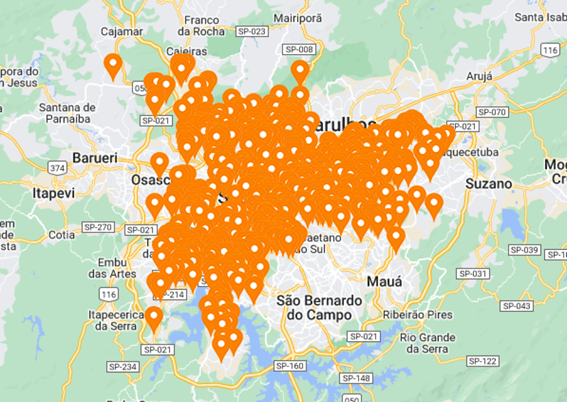

LOCAIS DE ENSINO NO BUTANTÃ
- 
As escolas no bairro abrangem vários níveis de escolaridade desde o infantil ao superior. E em relação a nível superior, o bairro possui uma das principais universidades da América Latina, com reconhecimento em nível mundial, a USP. O bairro conta com mais de 1.000 escolas na região, o que é um número impressionante, ao analisar o seu tamanho e localização.
3 ESCOLAS EM SÃO PAULO
Aqui podemos ver alguns vídeos sobre as escolas presentes no Butantã e a importância delas para a região. O Butantão é um local que preza muito pelo ensino, por isso, as escolas da região coolaboram muito para que as crianças aprendam cada vez mais.
SHOPPING BUTANTÃ

Ao mesmo tempo, para aquelas pessoas que gostam ou precisam constantemente fazer compras, o bairro tem a Galeria Extra Jaguaré, o Vivência CAVC e o Butantã Shopping. O Butantã Shopping, por exemplo, recebe mais de 800 mil pessoas por mês e tem mais de 116 mil metros quadrados, sendo mais de 250 lojas de diversos segmentos, com ambulatório, fraldário, empréstimo de carrinho de bebês, cadeira de rodas e transporte de Van executivo, se tornando um ótimo local para a família passear e curtir.
LOJA TAMOIO

Além disso, por ser um bairro bastante tradicional e antigo, ele possui uma loja com mais de 70 anos na Avenida Vital Brasil, a loja Tamoio que comercializa ferragens e materiais de construção desde 1948 e já presenciou o desenvolvimento do bairro e dos moradores. Clique aqui para ver um vídeo sobre a loja